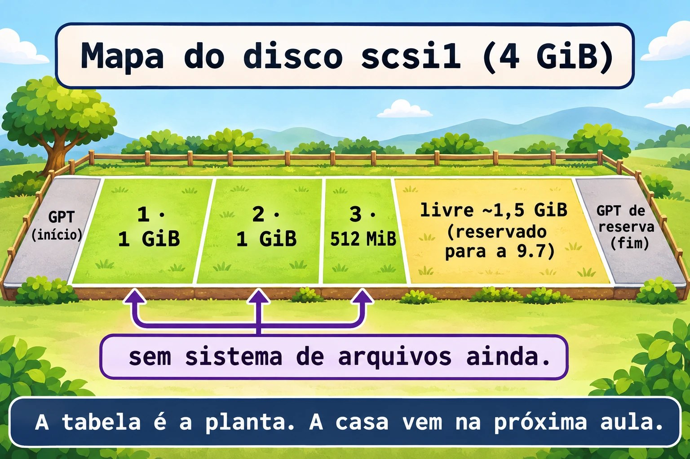

Aula 9.2 · Particionar
No Windows, o assistente "Novo volume simples" faz tudo de uma vez: cria a partição, formata e dá uma letra. No Linux, cada etapa é separada, e a primeira é a tabela de partições. Nesta aula você grava uma tabela GPT de verdade no disco novo, com três partições, e treina MBR num arquivo de imagem, sem risco.
Núcleo desta aula: confirmar o disco certo antes de gravar; criar tabela GPT e partições com
fdisk; inspecionar comgdiske verificar comv; fazer o mesmo sem interação comparted -s; e pedir ao kernel que releia a tabela compartprobeeudevadm settle. O resto é aprofundamento.
| Ficha | |
|---|---|
| Módulo | M9 · Armazenamento, aula 2 de 7 |
| Quando | Semana 13 |
| Ao final | O disco scsi1 tem as partições 1, 2 e 3, sem sistema de arquivos, e você sabe achar o disco certo antes de gravar |
| Pré-requisitos | Aula 9.1 (o scsi1 da 2.2, ampliado para 4 GiB) e aula 0.2 |
| Tempo | cerca de 2h30 |
| Snapshots | m9a2-inicio e m9a2-fim na rocky-lab e na debian-lab |
1 · Aquecimento
Responda antes de ler.
- Criar uma partição grava dados seus ou só um mapa?
- Por que
/dev/sdbhoje pode ser/dev/sdaamanhã? - Qual o limite do MBR em partições primárias e em tamanho de disco?
2 · Por que importa
| O chamado | A resposta errada | O que ela causa |
|---|---|---|
| "Adicionei um disco, prepare para o banco" | Rodar fdisk /dev/sdb de memória | O sdb era o disco de dados antigo, e a tabela dele foi reescrita |
| "Criei a partição e ela não aparece" | Reiniciar a VM | Faltou o w, ou o kernel não releu a tabela |
| "O disco de 4 TB só mostra 2 TB" | Culpar o hardware | Foi particionado como MBR |
| "Preciso de espaço depois" | Usar o disco todo agora | Sem espaço livre, o próximo ajuste vira refazer tudo |
3 · Modelo mental
Um disco é um terreno e a tabela de partições é a planta do loteamento, registrada no começo dele. A planta diz onde cada lote começa e termina. Nenhum lote tem casa ainda: a casa é o sistema de arquivos, da próxima aula. Desenhar a planta é rápido, e redesenhar com casas dentro é demolir. Por isso se confere o terreno antes. Na GPT, a planta tem uma cópia de reserva no fim do terreno.
Disco scsi1, 4 GiB (8388608 setores de 512 bytes)
| PMBR | GPT | 1 · 1 GiB | 2 · 1 GiB | 3 · 512 MiB | livre ~1,5 GiB | GPT de reserva |
| setor 0 | 1-33 | 2048.. | .. | ..5244927 | 5244928..8388574 | últimos 33 setores |
Hoje (9.2): partições 1, 2 e 3. O espaço livre fica para a 9.7.

Ponte Windows
| No Windows | No Linux | Onde a comparação engana |
|---|---|---|
| Gerenciamento de Disco, "Inicializar disco" | fdisk com g (GPT) ou o (MBR) | Aqui é um passo isolado, e nada é formatado |
| "Novo volume simples" | n no fdisk, e depois mkfs (9.3) | O Windows junta partição, formatação e letra. O Linux separa as três |
diskpart: select disk, create partition primary size=1024 | parted -s ou sfdisk, em script | O diskpart também aceita script |
Letra de unidade (D:) | Ponto de montagem, como /srv/dados (9.4) | Nada monta sozinho |
4 · O essencial
GB × GiB
Fabricantes falam em GB (10^9 bytes). O fdisk lê +1G como 1 GiB: 1024 MiB, ou 2.097.152 setores de 512 bytes. O parted só conta em binário quando você escreve GiB ou MiB; 1GB nele é decimal. O "4 GB" do Proxmox é 4 GiB. Daqui em diante, GiB e MiB.
Antes de gravar: confirme o alvo
Esse é o hábito mais importante da aula. Destruir um disco custa um comando, e o nome sdX não é garantido. O nome estável é o by-id, onde scsi1 é o número do disco no Proxmox:
ls -l /dev/disk/by-id/ | grep scsi1
DISK=$(readlink -f /dev/disk/by-id/scsi-0QEMU_QEMU_HARDDISK_drive-scsi1)
echo "$DISK"
lsblk "$DISK"O readlink -f resolve o link e devolve o nome atual, por exemplo /dev/sdb. A variável DISK vale só nesta sessão. Confira no lsblk: 4G, sem partições, sem ponto de montagem. O disco do sistema, de 20G, nunca é o alvo.
fdisk: criar a tabela e as partições
O fdisk é interativo: nada vale no disco até o w. Teclas que você usa:
| Tecla | Faz |
|---|---|
p | Mostra a tabela na memória |
g | Cria tabela GPT nova (o cria MBR) |
n | Nova partição. Pergunta número, primeiro setor, último setor |
t | Muda o tipo da partição (L lista os tipos) |
d | Apaga uma partição da tabela em memória |
w | Grava e sai |
q | Sai sem gravar nada |
No n, aceite o número e o primeiro setor padrão (Enter). No último setor, escreva o tamanho: +1G, +512M. O primeiro setor padrão é 2048, que é 1 MiB e está alinhado para qualquer tipo de disco.

gdisk: inspecionar e verificar
O gdisk trabalha só com GPT e mostra mais detalhes. Para inspecionar, rode sudo gdisk -l "$DISK". Dentro dele: p lista, i mostra uma partição com GUID e tipo, v verifica a integridade (cabeçalhos, CRC, sobreposição), q sai sem gravar. Os códigos de tipo têm quatro caracteres:
| Código | Uso |
|---|---|
8300 | Linux filesystem (dados, o que usamos aqui) |
8200 | Linux swap |
8E00 | Linux LVM (vira PV nas 9.6 e 9.7) |
EF00 | Partição EFI (a /boot/efi do sistema) |
O tipo é só uma etiqueta. Não cria nada dentro da partição.
parted -s: a versão para script
O parted aceita comandos na linha, e o -s (script) não faz perguntas. Serve para automação:
sudo parted -s "$DISK" unit MiB print free
sudo parted -s "$DISK" align-check optimal 1O primeiro mostra a tabela e o espaço livre, em MiB. O segundo diz se a partição 1 está alinhada. Para criar: mklabel gpt mkpart NOME INÍCIO FIM (na GPT, o primeiro argumento do mkpart é o nome). Cuidado: com -s, o mklabel apaga a tabela existente sem perguntar.
O sfdisk -d imprime a tabela como texto que o sfdisk aceita de volta: só leitura, ótimo como cópia antes de mexer.
O kernel precisa reler a tabela
Quando o disco não está em uso, o fdisk e o parted avisam o kernel sozinhos. Se a partição não aparecer:
sudo partprobe "$DISK"
sudo udevadm settle
lsblk "$DISK"O partprobe pede ao kernel que releia a tabela. O udevadm settle espera o udev terminar de criar os nomes em /dev. Com partição montada, a releitura falha: é o caso do disco do sistema.
MBR: treino sem risco
O MBR tem limites: no máximo 4 partições primárias (mais uma estendida com lógicas) e 2 TiB. A GPT guarda 128 partições por padrão, sem limite prático de tamanho, e tem cópia de reserva e CRC. Hoje, use GPT. Para praticar MBR sem tocar no disco novo, use um arquivo como disco:
truncate -s 1G ~/mbr.img
LOOP=$(sudo losetup --find --show -P ~/mbr.img)
echo "$LOOP"O truncate -s 1G cria um arquivo esparso de 1 GiB. O losetup --find --show escolhe um /dev/loopN livre, liga o arquivo e imprime o nome. O -P cria as partições (loopNp1). No fim, sudo losetup -d "$LOOP" desliga.

Rocky × Debian
| Rocky 9 | Debian 13 | |
|---|---|---|
fdisk, lsblk, losetup | Já vêm (util-linux 2.37) | Já vêm (util-linux 2.41) |
gdisk, sgdisk | sudo dnf install -y gdisk | sudo apt install -y gdisk |
parted | sudo dnf install -y parted | sudo apt install -y parted |
| Conferir o pacote | rpm -q gdisk parted | dpkg -s gdisk parted |
Os comandos são os mesmos. Muda só a instalação.
5 · Lab guiado
Passo 0 · Snapshot, backup e pacotes. O backup no PBS da 9.1 existe, e snapshot não é backup: ele mora no mesmo Ceph dos discos. Confira no Proxmox: pvesm list PBS-LAB --vmid 201. Depois: qm snapshot 201 m9a2-inicio e qm snapshot 202 m9a2-inicio. O snapshot inclui todos os discos e a configuração. O disco scsi1 é o da aula 2.2, ampliado na 9.1. Na rocky-lab ele também é /dev/lab-dados (regra udev da 2.2), mas o by-id vale nas duas VMs.
Na rocky-lab:
sudo dnf install -y gdisk parted
rpm -q gdisk parted
DISK=$(readlink -f /dev/disk/by-id/scsi-0QEMU_QEMU_HARDDISK_drive-scsi1)
lsblk "$DISK"
sudo wipefs "$DISK"
sudo blkid "$DISK"O wipefs sem -a só lista assinaturas, e aqui não lista nada. O blkid não imprime nada e termina com erro: o disco está vazio.
Passo 1 · Criar a tabela e as três partições com fdisk. Na rocky-lab, com DISK ainda definido e o alvo conferido (4G):
sudo fdisk "$DISK"Digite, em sequência, uma tecla por linha: g, n, Enter, Enter, +1G, n, Enter, Enter, +1G, n, Enter, Enter, +512M, p, w. Cada n pergunta número, primeiro setor e último setor. Dois Enter aceitam os padrões e, no último, você escreve o tamanho. Saída do p:
Device Start End Sectors Size Type
/dev/sdb1 2048 2099199 2097152 1G Linux filesystem
/dev/sdb2 2099200 4196351 2097152 1G Linux filesystem
/dev/sdb3 4196352 5244927 1048576 512M Linux filesystemO w termina com The partition table has been altered. e Syncing disks.. Seu disco pode não ser sdb.
Passo 2 · Conferir no kernel.
sudo partprobe "$DISK"
sudo udevadm settle
lsblk "$DISK"Saída esperada: sdb1 (1G), sdb2 (1G) e sdb3 (512M), sem ponto de montagem. No by-id agora há -part1, -part2 e -part3.
Passo 3 · Inspecionar com gdisk.
sudo gdisk -l "$DISK"
sudo gdisk "$DISK"O -l só lista. No segundo, digite v e depois q. Saída esperada do -l:
Disk /dev/sdb: 8388608 sectors, 4.0 GiB
Total free space is 3143647 sectors (1.5 GiB)
Number Start (sector) End (sector) Size Code Name
1 2048 2099199 1024.0 MiB 8300 Linux filesystem
2 2099200 4196351 1024.0 MiB 8300 Linux filesystem
3 4196352 5244927 512.0 MiB 8300 Linux filesystemOs 1,5 GiB livres ficam para a 9.7. O v termina com No problems found.
Passo 4 · Espaço livre e alinhamento com parted.
sudo parted -s "$DISK" unit MiB print free
sudo parted -s "$DISK" align-check optimal 3
sudo sfdisk -d "$DISK"O print free mostra Free Space de cerca de 1535 MiB no fim. O align-check responde 3 aligned. Guarde a saída do sfdisk -d no caderno.
Passo 5 · MBR no arquivo de imagem. Ainda na rocky-lab:
truncate -s 1G ~/mbr.img
LOOP=$(sudo losetup --find --show -P ~/mbr.img)
echo "$LOOP"
sudo fdisk "$LOOP"Digite: o, n, Enter (primária), Enter, Enter, +300M, n, Enter, Enter, Enter, +300M, p, w. No MBR, o n pergunta o tipo (p primária, e estendida). O p mostra dos e duas partições de 300M. Depois:
lsblk "$LOOP"
sudo partprobe "$LOOP"
sudo udevadm settle
sudo losetup -d "$LOOP"
rm ~/mbr.img
losetup -aO lsblk mostra loop0p1 e loop0p2. O losetup -d desliga o loop e o rm apaga o arquivo. O losetup -a não deve listá-lo.
Passo 6 · debian-lab, com parted -s. Na debian-lab:
sudo apt install -y gdisk parted
dpkg -s gdisk parted | grep Status
DISK=$(readlink -f /dev/disk/by-id/scsi-0QEMU_QEMU_HARDDISK_drive-scsi1)
lsblk "$DISK"
sudo wipefs "$DISK"Se tudo confere (4G, sem partição, wipefs vazio), grave com a ferramenta de script:
sudo parted -s "$DISK" mklabel gpt mkpart dados 1MiB 1025MiB mkpart arquivo 1025MiB 2049MiB mkpart troca 2049MiB 2561MiB
sudo udevadm settle
sudo gdisk -l "$DISK"O resultado tem os mesmos setores do fdisk na Rocky. Os nomes dados, arquivo e troca ficam na coluna Name.
Decida 1
Ontem o disco novo era /dev/sdb. Hoje o lsblk mostra sdb de 20G e sdc de 4G. Qual é o alvo seguro?
A) /dev/sdb, porque era ele ontem. B) Resolver o by-id do scsi1 com readlink -f, e conferir o tamanho no lsblk. C) O primeiro disco sem partições que aparecer.
Marque uma opção antes.
| Se você marcou | Resultado | Por quê |
|---|---|---|
| A | Pode apagar o sistema | O sdb agora é o disco de 20G |
| B | Certo | O by-id segue o número no Proxmox, e o tamanho confirma |
| C | Arriscado | "Sem partição" não prova nada: um disco de dados bruto também parece vazio |
Para fixar: o nome é o que o kernel deu hoje. O by-id é o que o Proxmox deu para sempre.
Decida 2
Um disco de 6 TB terá 6 partições. Qual tabela?
A) MBR, porque é a mais compatível. B) GPT. C) MBR com uma partição estendida.
Marque uma opção antes.
| Se você marcou | Resultado | Por quê |
|---|---|---|
| A | Não funciona | O MBR enxerga no máximo 2 TiB |
| B | Certo | GPT aceita o tamanho e as partições |
| C | Falha no tamanho | A estendida não remove o limite de 2 TiB |
Para fixar: GPT é o padrão. MBR só para equipamento antigo.
6 · Quebre e conserte
Quebra 1 · A partição que sumiu
Na rocky-lab:
sudo fdisk "$DISK"Digite n, Enter, Enter, +256M, p e depois q. Confira:
lsblk "$DISK"Sintoma: você "criou" a partição 4 e o lsblk só mostra três.
Investigação e causa: o fdisk avisa que as mudanças ficam só na memória até o w. O q saiu sem gravar.
Conserto: w antes de sair, se a intenção fosse gravar. Aqui, ainda bem que faltou: a tabela continua com as três partições.
Quebra 2 · O loop sem partições
Na rocky-lab:
truncate -s 1G ~/quebra.img
LOOP=$(sudo losetup --find --show ~/quebra.img)
printf 'g\nn\n1\n\n+200M\nw\n' | sudo fdisk "$LOOP"
lsblk "$LOOP"Sintoma: o fdisk gravou, mas o lsblk não mostra loopNp1.
Investigação: losetup -l "$LOOP" mostra PARTSCAN igual a 0. Faltou o -P ao ligar o arquivo.
Causa: sem -P, o kernel não procura partições dentro do loop.
Conserto: desligue e ligue de novo com -P. Os dados estão no arquivo, e não se perdem:
sudo losetup -d "$LOOP"
LOOP=$(sudo losetup --find --show -P ~/quebra.img)
lsblk "$LOOP"Agora aparece loopNp1, de 200M.
Quebra 3 · A cópia de reserva fora do lugar
Aumente o "disco" de 1 GiB para 1,5 GiB, como faz o qm resize:
truncate -s 1536M ~/quebra.img
sudo losetup -c "$LOOP"
sudo fdisk -l "$LOOP"Sintoma: o fdisk avisa GPT PMBR size mismatch e The backup GPT table is not on the end of the device.
Investigação e causa: o disco cresceu (o losetup -c avisou o kernel), mas a cópia de reserva da GPT continua no fim do tamanho antigo. Ela deve ficar nos últimos setores.
Conserto: sudo sgdisk -e "$LOOP" move a cópia para o fim. A resposta é The operation has completed successfully. Rode sudo fdisk -l "$LOOP" de novo, sem avisos. Na 9.7, o growpart faz isso por você, depois do qm resize.
Limpeza
sudo losetup -d "$LOOP"
rm ~/quebra.img
losetup -aO disco scsi1 fica com as três partições, para a 9.3.
7 · Armadilhas
| Armadilha | O que acontece | Como evitar |
|---|---|---|
Gravar em /dev/sdb sem conferir | Apaga o disco errado | readlink -f no by-id e lsblk |
| Achar que particionar formata | Só existe a tabela | Siga com mkfs (9.3) |
Esquecer o w | Nada é gravado | Confira com lsblk depois |
mklabel com parted -s em disco com dados | Apaga a tabela sem perguntar | Veja print antes e guarde sfdisk -d |
Esquecer o -P no losetup | O loop não mostra partições | losetup -d e ligar com -P |
8 · Quiz
Responda sem olhar. O gabarito está no fim da aula.
- Qual comando resolve o
by-idde um disco para o nome atual? - Qual a diferença entre
qewnofdisk? - O que o código
8E00dogdiskindica? - Por que o
-Pimporta nolosetup? - Quando o
parted -sé melhor que ofdisk? - Onde fica a cópia de reserva da GPT?
9 · Cola
Para saber de cor:
| Quero... | Comando |
|---|---|
| Achar o disco certo | readlink -f /dev/disk/by-id/scsi-0QEMU_QEMU_HARDDISK_drive-scsiN |
| Ver discos e partições | lsblk |
| Criar GPT e partições | sudo fdisk DISCO (g, n, w) |
| Verificar a GPT | sudo gdisk DISCO, tecla v |
| Reler a tabela | sudo partprobe DISCO e sudo udevadm settle |
| Disco de treino | truncate -s 1G ARQ e losetup --find --show -P ARQ |
Para consultar:
| Quero... | Comando |
|---|---|
| Listar tabela | sudo fdisk -l DISCO |
| Copiar a tabela | sudo sfdisk -d DISCO |
| Mover a GPT de reserva | sudo sgdisk -e DISCO |
Flashcards:
- Tabela de partições → a planta, não a casa.
by-id→ nome fixo.8300,8200,8E00,EF00→ dados, swap, LVM, EFI.- MBR → 4 primárias e 2 TiB.
- GPT → 128 partições e cópia de reserva.
10 · Checklist e fechamento
- [ ] Confirmo o disco pelo
by-idantes de gravar - [ ] Crio GPT e partições no
fdiske verifico comgdisk - [ ] Faço o mesmo com
parted -s - [ ] Releio a tabela com
partprobeeudevadm settle - [ ] Pratiquei MBR no loop e removi com
losetup -d - [ ] Sei por que sobra 1,5 GiB livre no
scsi1
Último exercício, sem olhar a aula: num arquivo de imagem de 1 GiB na debian-lab, crie uma GPT com duas partições de 256 MiB só com parted -s, confirme com gdisk -l, desligue o loop e remova o arquivo.
Snapshot de fim (no Proxmox):
qm snapshot 201 m9a2-fim
qm snapshot 202 m9a2-fim11 · Na vida real
Missão, só leitura. Num servidor Linux que você administre (ou com autorização), rode apenas:
lsblk -o NAME,SIZE,TYPE,FSTYPE,MOUNTPOINTS
sudo fdisk -l | head -n 40
sudo parted -l
ls -l /dev/disk/by-id/ | head -n 20Perguntas: cada disco usa GPT ou MBR? Há espaço não alocado? Algum disco tem partição sem sistema de arquivos?
Diário: anote o desenho de cada disco e o espaço sem uso. Não altere nada.
12 · Aprofundar quando quiser
man fdisk,man gdisk,man sgdisk,man parted,man sfdisk: opções que ficaram de fora.- Red Hat Documentation: "Managing storage devices" (RHEL 9), capítulos sobre partições de disco.
- Debian Wiki: páginas sobre particionamento.
- kernel.org: documentação do dispositivo
loop. - util-linux: código de
fdisk,lsblkelosetup.
Gabarito comentado
Aquecimento
- Só um mapa: onde cada partição começa e termina, e o tipo. Os dados do usuário vêm depois, com o sistema de arquivos.
- Porque a ordem dos nomes
sdXdepende da ordem em que o kernel detecta os discos, e não é garantida. Oby-idé estável. - Quatro partições primárias (ou três mais uma estendida com lógicas) e 2 TiB.
Quiz
readlink -f /dev/disk/by-id/....- O
wgrava a tabela no disco e sai. Oqsai sem gravar nada. - Linux LVM: a partição será um volume físico (PV) do LVM.
- Sem
-P, o kernel não cria os dispositivosloopNpN, e olsblknão mostra as partições. - Em script e automação, porque não faz perguntas.
- No fim do disco, nos últimos setores. Se o disco crescer, a cópia precisa ser movida (
sgdisk -e).